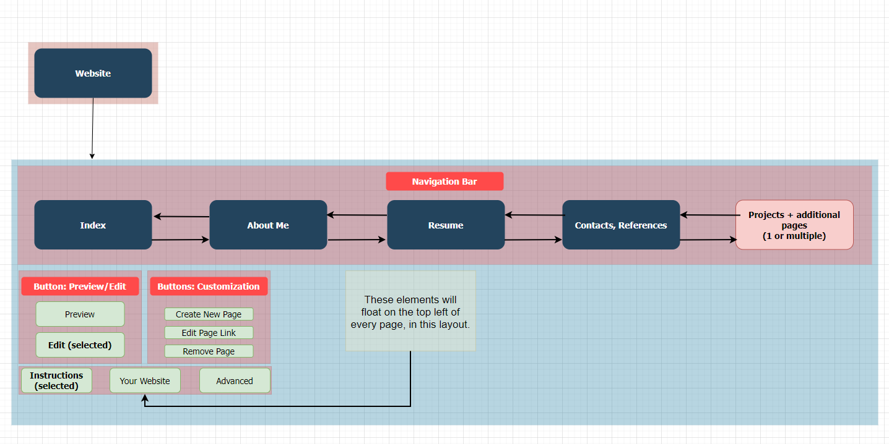

Client Project Outline
Preliminaries
Client Category (2)
The client is a friend of mine that lives outside of North Carolina.
Project Category (1)
I will be developing a web application to help anybody looking to build a website promoting their technical experience and brand.
Requirements & Design
Project Overview
-
Application & Purpose
- Project name: TPS (Technical Portfolio Studio).
- The application will be a website generator for a website promoting the client's technical experience.
- After the user is done building the "base" of their website, they may simply use CTRL+S to save each page to their own computer for further modification.
-
Intended users
- Ultimately this application will provide a "template website" for anybody looking to build a site promoting themselves.
- These can be students as well as those who are already in the professional world.
- It's free to use.
-
Content
- The app will work by having two modes: an 'edit' mode and a 'preview' mode. There will be a button where you can toggle between the two, which will float in the top-left corner.
- Being in the 'edit' mode will reveal buttons for editing a navbar ("navigation bar") as well as other site contents.
- By default, the navbar's elements are already there. For any particular navbar link, the user may choose whether to include, edit, or remove it.
- The navbar elements may link to a personal introduction page; A resume page; A page listing contact info of references; or pages for personal projects (one page per project).
Client Information
- Client Name: Charles Haney
- Client Background: He is a good friend of mine who lives out of state. He wants to build a website to promote his background. He has some technical expertise and could build a good website if he put in the time; however, he would like to get a basic layout for his site up and running as quickly as possible.
- Client Organization: None in particular - He is a college student outside of North Carolina.
- Client E-mail: [private]
- Client Phone #: [private]
Sitemap
Page Design - Global Elements
-
Preview/Edit Buttons
- When clicked, the mode will switch to either "Preview" or "Edit".
- When in the "Preview" mode, the site appears to be a normal web page.
- When in the "Edit" mode, all the forms appear where you can edit/add/remove basic web elements.
-
Customization Buttons
- "Create New Page": When clicked, an alert window will appear which will allow the user to select the title of a new page. Then, the new page is added toward the end of the existing navbar.
- "Edit Page Link": An alert window will pop up with two fields. In the first is the nav link ID (1, 2, 3, 4...) and the second is the new nav link name (A string).
- "Remove Page": An alert window will pop up where the user can select which nav link (#) they want to remove.
-
Lower Buttons
- "Instructions": Introduces the user to app functionality. This will be its own page with several paragraphs and images.
- "Your Website": Brings the user to the main interface with the navbar.
- "Advanced": Brings the user to the Styling and Customization options, which is a separate page.
-
Layout of These Elements
- Both of these elements be within a window that floats on the top left corner of the page.
- The sub-buttons will be laid out just like how they appear in the image above, within the floating window.
- These elements will be on all pages, and will never disappear.
- The "(selected)" text you see on the site map represents which button is selected in that group. The "(selected)" will not be there on the real site - rather, there will be a color-based indicator.
Page Design - Individual Pages
-
Index
- Represnts what will become the user's homepage.
- User may build headers, paragraphs, lists, and images using form elements.
- These form elements will be textboxes, normal buttons, and file-upload buttons.
- Using the global floating UI in the top left, the user can be sent to a preview of the site. This is where they can save it using CTRL+S.
-
About Me
- This page will be similar in essence to the BYO Intro page. However there will be more customizability options.
- Like in page #1, the user will be able to build headers, paragraphs, lists, and images as HTML elements.
- The page will be pre-filled with an introduction similar to the BYO Intro default introduction.
-
Resume
- This will be a form page prefilled with data of what a real resume would look like.
- The user will upload a PDF/DOCX (check with JavaScript) of their resume.
- Of course, there are many small details which the user will need put in manually, but this tool should do most of the work.
-
Contacts, References
- Again, this page will be a generator similar to #1-#3.
- The user will add their own contact info (E-mail, Phone #) and any of their social links (LinkedIn, GitHub, GitLab, etc).
- The user will add any references with their contact info. To do this, there will be an "Add Reference" button which will dynamically generate a mini-form which itself will generate HTML elements.
-
Projects
- Here, the user can generate one or more personal project pages and preview them.
- Each one of these projects will appear individually as a page in the navbar.
- Similarly to #2, the user will be able to build headers, paragraphs, lists, and images.
-
Styling, Customization
- The most complicated feature of the application - This section will be accessed through the "Advanced" global button.
- The user can set the CSS of their own site and see the background, colors, and fonts change in real time.
- Ths will work by using JavaScript to change the CSS within the HTML file (head > styles). At the same time, the webpage will update a copy-paste section with the corresponding CSS code.
- There will be instructions as to how to set up an external stylesheet that works for all the pages.
- Like with the resume, the user obviously won't be able to do EVERYTHING they want from the web UI - but they can get most of the basics done.
Dynamic Site Functionality
- Nearly every page (except for the home) will have Javascript functionality.
- Each of the functional pages (#1-#5) will dynamically create HTML elements. These will work similarly to the BYO Intro page but will have support for adding multiple images, paragraghs, and headers.
- Each of the functional pages will have an option to preview what the page will look like based on the user input.
- The very last site (Styling, Layout, Customization) will be able to change its own CSS styling based on a number of form fields. These deal with the navbar layout(sidebar or top), font color, font type, and the background image/color/color gradient.